Directory
Tutorials and documentation by category
-
Developers Cheatsheet
"Owl" you need to know about Pareto Anywhere's core data structures.
Pareto Anywhere
-

-
Run Pareto Anywhere on a PC
Our step-by-step guide to install and run on a Windows/Mac/Linux PC (or server).
-

-
Run Pareto Anywhere on a Raspberry Pi
Our step-by-step guide to install and run on any version of the ubiquitous Pi.
-
Create a Pareto Anywhere startup script
Our step-by-step guide to run a custom Pareto Anywhere configuration, initiated by a simple startup script.
-
Run Pareto Anywhere as a Windows service
Our step-by-step guide for production deployments on Windows machines
-
Run Pareto Anywhere for Azure
Our step-by-step guide to deploy and run Pareto Anywhere as a serverless function on Microsoft Azure.
-
Run Pareto Anywhere for Azure with Aruba APs
Our step-by-step guide to deploy and run Pareto Anywhere as a serverless function on Azure, with HPE Aruba Networking access points as an IoT data source.
-
Hello Pareto Anywhere!
A getting started guide oriented towards developers familiar with the open source software model.
-
Open Source Software packages list
A canonical list and descriptions of the core reelyActive OSS packages.
Ambient Devices
-

-
Bangle.js Development Guide
Discover and develop Bangle.js smart watch applications.
-
Configure a Minew B10 Wristband
Our step-by-step guide to configure the multi-use wristband with the BeaconSET+ app.
-

-
Configure a Minew C6 beacon
Our step-by-step guide to configure a C6 beacon with the BeaconSET+ app.
-

-
Configure a Minew E8 beacon
Our step-by-step guide to configure an E8 beacon with the BeaconSET+ app.
- 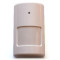
-
Configure a Minew MSP01 PIR Sensor
Our step-by-step guide to configure the passive infrared sensor with the BeaconSET+ app.
-
Configure a Minew S1 beacon
Our step-by-step guide to configure a S1 beacon with the BeaconSET+ app.
-
Jolt.js Development Guide
Discover and develop Jolt.js wireless motor driver applications.
-

-
Nicla Vision Development Guide
Develop Nicla Vision applications for context-aware physical spaces using OpenMV and Bluetooth Low Energy.
- 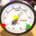
-
Nicla Vision Gauge Reader Configuration Guide
Create a wireless gauge reader using OpenMV and Bluetooth Low Energy.
-

-
Puck.js Development Guide
Discover and develop Puck.js wireless sensor applications.
Ambient Infrastructure
-
Configure Aruba IoT Operations
Configure access points running AOS 10.x to forward IoT data for processing by Pareto Anywhere.
-
Configure an Aruba Instant AP
Configure access points running AOS 8.x to forward IoT data for processing by Pareto Anywhere.
-
Configure a Minew G1 gateway
Our step-by-step guide to configure the gateway to forward data for processing by Pareto Anywhere.
-
Configure a Minew MG3 gateway
Our step-by-step guide to configure the gateway to forward data for processing by Pareto Anywhere.
-
Configure a Minew MG4 gateway
Our step-by-step guide to configure the gateway to forward data for processing by Pareto Anywhere.
-
Configure a Minew MG7 gateway
Our step-by-step guide to configure the gateway to forward data for processing by Pareto Anywhere.
- 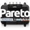
-
Configure an Impinj R700 reader
Our step-by-step guide to configure the reader to forward data for processing by Pareto Anywhere.
- 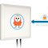
-
Configure an Owl-in-One
Our step-by-step guide to configure the WiFi and/or program the software of an Owl-in-One.
-

-
Create a WLAN of Owl-in-Ones and a laptop
Our step-by-step guide to create a local wireless network by configuring an Owl-in-One as an access point.
- 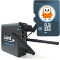
-
Prepare a Laird IG60 gateway from scratch
Our step-by-step guide to prepare a lean yet versatile SD card image for the IG60.
- 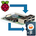
-
Prepare a Raspberry Pi from scratch
Our step-by-step guide to prepare a lean yet versatile SD card image for the Pi.
-
Prepare a reelyActive laptop from scratch
Our step-by-step guide to prepare a laptop with the minimum prerequisites for our open source software.
Best Practices
-
Best practices for BLE identifiers
Assignment of Bluetooth Low Energy (BLE) identifiers for interoperability and interpretability.
-
Best practices for BLE advertising data
Structuring Bluetooth Low Energy (BLE) advertising data for interoperability and interpretability.
Integrations
PostgreSQL/Grafana Integration
-
Install PostgreSQL and PostGIS
Prepare the open source relational database with geospatial support to receive IoT and RTLS data from Pareto Anywhere.
-

-
Grafana with PostgreSQL
Prepare Grafana to visualise IoT and RTLS data from Pareto Anywhere via a PostgreSQL database.
-
Grafana time series with PostgreSQL
Create Grafana time series visualisations of stored IoT data from Pareto Anywhere.
Elastic Stack Integration
-
Elastic Cloud Deployment Guide
Store and analyse data from context-aware physical spaces in the cloud.
-

-
Create alerts and notifications in Kibana
Our step-by-step guide to create alerts that identify specific changes in data and notify you.
- 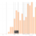
-
Create annotations in Kibana
Our step-by-step guide to highlight key information or anomalies in a Time Series visualization.
-
Create an asset tracking dashboard in Kibana
Our step-by-step guide to create an asset tracking dashboard for physical spaces using Kibana.
- 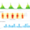
-
Create an occupancy dashboard in Kibana
Our step-by-step guide to create an occupancy dashboard for physical spaces using Kibana.
-
Create a pie chart in Kibana to compare zone activity
Our step-by-step guide to create a pie chart visualisation in Kibana.
- 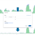
-
Create a RSSI filter in Kibana to refine occupancy analytics
Our step-by-step guide to create a RSSI filter in Kibana to apply a proximity-based occupancy threshold.
-

-
Create a space/time occupancy heatmap in Kibana
Our step-by-step guide to create a heatmap to visualise the occupancy of a physical space over time.
- 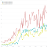
-
Create a timelion expression of the number of unique devices per receiver in Kibana
Our step-by-step guide to create a timelion expression in Kibana.
-
Create a TSVB in Kibana to calculate average occupancy
Our step-by-step guide to create a TSVB visualization in Kibana and gives an understanding of how rooms are used.
- 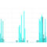
-
Create a TSVB in Kibana to observe room occupancy over time
Our step-by-step guide to create a TSVB visualisation in Kibana to answer the question: When are rooms occupied?
- 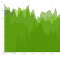
-
Create a TSVB in Kibana to understand space utilization
Our step-by-step guide to create a TSVB visualization in Kibana to observe how spaces are used over the course of a week.
- 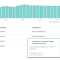
-
Export data from Kibana as a CSV file
Our step-by-step guide to export location and sensor data as a CSV file.
-
Integrate email with Elasticsearch and Kibana
Our step-by-step guide to setting up and integrating email with Elasticsearch and Kibana to receive instant notifications.
-
Integrate Slack with Elasticsearch and Kibana
Our step-by-step guide to setting up and integrating Slack with Elasticsearch and Kibana to receive instant notifications.
-

-
Kibana integration overview
Our guide to integrating and using Kibana with our open source software.
-
Set up a hosted Elasticsearch Service
Our step-by-step guide to setup Elastic's hosted cloud service for use with our open source software.
Applications
-
Contact tracing architectures
An overview of architectures combining mobile, beacons, infrastructure and—most importantly—human judgement.
Showcase Kit
-

-
Demonstrate asset tracking
Using a reelyActive Showcase Kit.
-
-
Demonstrate personnel tracking
Using a reelyActive Showcase Kit.
- 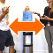
-
Demonstrate proximity interaction detection
Using a reelyActive Showcase Kit and DirAct.
Where to next?
Didn't find the tutorial you were looking for?
-
Pareto Anywhere
Our open source IoT middleware that makes sense of things.
-

-
DirAct
Our open source embedded software for proximity interaction detection.
-

-
reelyActive
Together, let's make sense of things.
-
-
reelyActive Developers
Return to the reelyActive Developers home page.